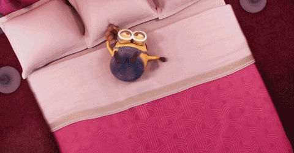

Credit: Eberhard Grossgasteiger from Pexels
在開始分享面試技巧前，我想再次強調如果在某間有提供面試的大學沒有得到面試邀約，不用緊張或絕望。網路上有非常非常多八卦會說沒有得到面試代表您是已經被刷掉了的申請者，不過多數大學都表明了這只是因為校友不夠多，那過往也有很多很多沒得到面試卻錄取的故事。您可以在這裡 (沒MIT面試而錄取)和那裡 (沒賓大面試而錄取)讀到一部分的例子。希望大家不要因為這件事自己嚇自己然後就把自己嚇死ㄌ，專注在準備您確實有得到的面試，然後nail it :) 
美國大學的面試長什麼樣子呢？
首先要分享一個美國大學面試和台灣蠻不一樣的特點，就是美國版的面試會非正式很多。面試校友並不是真的要考倒您，然後面試問題也不會像台灣一樣出現什麼「請解釋配位化合物為何？」之類的。美國版的面試通常會蠻像在聊天的，然後它著重的部分會是在您究竟瞭不瞭解您申請的這間大學、為什麼申請、您的人格特質、您喜歡的課外活動......等，然後也給您一個機會能透過畢業校友更深入了解在這間大學就讀的感覺。如果大家想理解美國大學面試到底有多不正式，那我來分享一下我都在我的面試中發表以及聽到了什麼驚人的言論。在和常春藤某校的校友面試中，我們花了大概二十分鐘講阿富汗及巴西烤肉；在和另一所常春藤盟校的校友面試中，我們彼此交流了有人之前在那間大學及北一女外面裸奔的故事。
是由誰來面試我呢？
另外，或許大家會有些好奇究竟是由誰來面試您呢？在絕大多數的情況中，面試您的人會是那間大學的畢業校友。另外，這位校友會高機率也來自台灣，或甚至和您來自同個城市。在我得到的六場面試中，有一個香港人、五個台灣人，更有趣的是其中一位台灣面試校友甚至是與我同高中的畢業學姊。
在哪裡面試呢？
由於近幾年有了惡名昭彰的Covid-19，所以許多大學面試都是透過Google Meet、Zoom......等等進行。不過，在沒有Covid的時代中，頗多校友都會和申請者約在當地的咖啡廳進行面試。(當然也還是有視訊會議ㄉ)
面試該穿什麼呢？
第一件事情呢，就是絕對不要直接直接穿全套西裝，醬會太過頭。蠻多大學都會建議小朋友穿”casual”的衣服，那通常就是穿個有領子的襯衫配黑色制服褲就歐給了。
該怎麼準備面試呢？
首先，我非常不建議大家背稿來回答問題。美國大學校友面試通常時長會到一個小時，所以它並不是一個「問答」的形式，而比較類似聊天。面試的意義在於想知道您究竟是個什麼樣的人。舉例而言，你想想班上最內向和最外向的兩個人，他們兩人在申請上都會以很正式的筆調回答各種問題，所以審查官其實並不懂他們在現實生活中的性格究竟是如何，然後也不知道他們究竟討不討人喜歡。透過一小時長的聊天，校友不只會記錄您所分享的各種經歷，他們也會告訴大學們你給人的印象。如果你在面試中完全背稿回答的話，你會聽起來十分的死板，那校友也在你身上看不見什麼獨特的人格，而這會是個扣分。要記得，美國名校申請中會有千百個人都和你有相似程度的成就，所以你的獨特性是審查官非常在意的 :)
好的我們杜絕背稿後，讓我們來看看美國大學面試的準備方法ㄅ！
第一，想想你在高中做過了哪些事情會是你特別熱情想跟人分享的。舉例來說，我非常投入高中時期所做過的科展、翻譯志工，及架設網站，而這三項活動中我有講不完的經驗、趣味小故事。接著，你努力回憶一下這些經驗、故事裡究竟發生了什麼代誌，然後您覺得跟別人聊天時您要怎麼引起對方興趣。把以上這些靈感都列出來。
接著，讓我們看看大學面試的十四大芭樂問題。針對以上十四個芭樂問題，你要計畫好你要說什麼，以及相應所要提出的故事、經驗。舉例來說，當面試官問你 ”What Makes You Unique?” ，您可以說「我很有好奇心、我對追求真理有種莫名的喜好.....」之類ㄉ，但是，這種回答大家都說得出來，審查官看到時只會想說「哼你是我看到第900位覺得自己很有好奇心的小朋友」。因此，你也要計畫好所要提出的一個相稱的故事，例如「我做科展的時候很常半夜三點還在看文獻，因為我搞不懂然後我就睡不著。上課時我還會把文獻夾在課本書套裡，醬就可以繼續看然後不被老師抓。」如此的回答就會大學端也更容易看見你的好奇心以及堅持找到答案的特質，那你的校友面試官也可以針對這個故事再開啟一個話題。畢竟校友面試官也不是什麼專業陪聊天人員之類ㄉ，如果您不講一些有趣、能引起對方注意的東西，到時沒話題了、對話結束了，你的面試官就走ㄌ:(
好的來分享一下面試通常的流程！通常面試時會以最經典的 ”Tell Me About Yourself” 開頭，由於面試您的校友只看得到您所就讀的高中及姓名，因此他們基本上完全不知道您的任何經驗或活動，而最經典的開頭問題就是要給予您一個開啟對話的方式。接下來，面試官會針對你回答裡提到的有趣活動、故事繼續發問，部分面試官走的會是純聊天路線，不會直接問您「您最獨特的特質是什麼」之類ㄉ。如果是醬您要主動一些，談天時講到「喔我有做過科展喔」就趕快把計畫好的故事拿出來分享，順便說「所以我覺得自己蠻有好奇心的，然後也很堅持一定要找到答案」。不過大部分的面試官都是走邊聊天邊問答，一個話題結束後面試官就提問下個問題，然後您的回答又開啟下個聊天話題。
最後，有時面試也會出現一些超級天外飛來一筆的問題，像是「你最想回到哪個歷史時代？」、「你最想和誰共進晚餐？」...... 這時莫驚慌，畢竟準備上頭十四大芭樂面試問題時您已經想清楚自己所想要強調的特質了，所以回答就照著計畫好的方向走。舉例而言，你在準備十四大芭樂問題時，已經計劃好面試中要強調自己對藝術的喜好，那在「共進晚餐」這題您就照著原方向走，即興想一個自己很喜歡的藝術家以及關於他的特點、小故事 :) 通常面試官也會知道自己問的這類奇怪問題會讓小朋友有些驚訝，所以大家小小思考幾秒也不會太奇怪。面試的重點是要把自己的特質清楚、大聲的展現出來，這不是什麼需要超級流暢的TED Talk之類ㄉ:)
除了以上說明外，我也在此分享這篇我十分喜歡的面試教學:)
最後最後，大家也該準備幾個想問校友關於這間大學的問題，然後盡量問一些網路上找不到ㄉ。如果需要一點靈感的話，我還蠻常問我的面試校友說這間大學和它周遭的地區是不是關係很緊密，還是它就是自己在一個與世隔絕的泡泡裡。我也有問過一些面試校友他在那間大學上過最難忘的課是什麼，或者聽過哪些很奇怪的campus traditions。校友會在面試快結束時問你對這間大學有沒有什麼好奇，大家盡量發問個一兩題，展現你對這間大學的興趣。